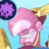

- 세대
- 완전체
- 종족
 데이터
데이터- 속성
 무
무- 소비 메모리
- 12
- 장비 슬롯
- 3
스테이터스 (Lv.99)
HP163058위/78
SP15834위/78
ATK18936위/78
INT17725위/78
DEF2226위/78
SPD13173위/78
막대 길이는 등록된 디지몬 중 최고값 대비 비율이에요. 순위는 스테이터스가 등록된 디지몬끼리 비교해요.
필살기 1
베르세르크 소드 무 SP 15
적 1체물리
디지몬 속성과 같음
적 1체를 즉사시킨다. 명중률 30%.
상성별 데미지 배율 상대 종족(세로) · 속성(가로)상대 속성(세로) · 종족(가로)
×3 이상×2 이상보통×1 미만
| 상대 ↓ / → | |||||||||
|---|---|---|---|---|---|---|---|---|---|
| 백신 | ×2.00 | ×2.00 | ×2.00 | ×2.00 | ×2.00 | ×2.00 | ×2.00 | ×2.00 | ×2.00 |
| 데이터 | ×1.00 | ×1.00 | ×1.00 | ×1.00 | ×1.00 | ×1.00 | ×1.00 | ×1.00 | ×1.00 |
| 바이러스 | ×0.50 | ×0.50 | ×0.50 | ×0.50 | ×0.50 | ×0.50 | ×0.50 | ×0.50 | ×0.50 |
| 프리 | ×1.00 | ×1.00 | ×1.00 | ×1.00 | ×1.00 | ×1.00 | ×1.00 | ×1.00 | ×1.00 |
| ×2.00 | ×1.00 | ×0.50 | ×1.00 | |
| ×2.00 | ×1.00 | ×0.50 | ×1.00 | |
| ×2.00 | ×1.00 | ×0.50 | ×1.00 | |
| ×2.00 | ×1.00 | ×0.50 | ×1.00 | |
| ×2.00 | ×1.00 | ×0.50 | ×1.00 | |
| ×2.00 | ×1.00 | ×0.50 | ×1.00 | |
| ×2.00 | ×1.00 | ×0.50 | ×1.00 | |
| ×2.00 | ×1.00 | ×0.50 | ×1.00 | |
| ×2.00 | ×1.00 | ×0.50 | ×1.00 |
배율 칸을 누르면 계산식이 여기에 나와요.
SS(서포트스킬)
철벽의 보호
방어력이 15% 상승한다.
계승기 (레벨업 습득) 4
이 디지몬이 레벨업으로 배우는 스킬이에요. 배운 스킬은 진화·퇴화해도 계속 쓸 수 있어요.
| 습득 Lv | 스킬 | 속성 | SP |
|---|---|---|---|
| 15 | 마하 러시 I 적 전체에 무속성 위력 35의 물리공격. 필중. | 4 | |
| 25 | 안티 패닉 배틀멤버 1체의 혼란을 치료하고 HP를 약간 회복한다. | 4 | |
| 35 | 헤비 스트라이크 III 적 1체에 무속성 위력 110의 물리공격. 필중. | 9 | |
| 45 | 마하 러시 II 적 전체에 무속성 위력 50의 물리공격. 필중. | 7 |
이 디지몬이 강한 상대 97펼쳐 보기
등록된 디지몬 중 필살기로 ×2 이상 데미지를 줄 수 있는 상대예요. 세대를 누르면 그 세대 목록이 보여요.
완전체 같은 세대 22 · 다른 세대 상대는 도감에서 볼 수 있어요.
진화 전 디지몬 (퇴화 가능) 5
진화 가능 디지몬 4
크레니엄몬
- 레벨 60 이상
- 최대 SP가 110 필요
- 방어력이 180 필요
- 지력이 140 필요
- 재능이 80 필요
듀란다몬
- 레벨 60 이상
- 최대 HP가 1500 필요
- 공격력이 140 필요
- 방어력이 120 필요
- 재능이 20 필요
두프트몬
- 레벨 60 이상
- 최대 SP가 100 필요
- 지력이 120 필요
- 민첩이 140 필요
- 재능이 80 필요

로드나이트몬
- 레벨 60 이상
- 공격력이 120 필요
- 지력이 135 필요
- 민첩이 150 필요
- 재능이 80 필요
- 우정이 50% 필요
진화 트리 · 나이트몬까지 오는 길 + 다음 진화
왼쪽부터 진화 순서예요. 나이트몬 오른쪽(점선 칸)은 바로 다음 진화 1단계예요. 그 뒤가 궁금하면 그 디지몬을 눌러 따라가 보세요. 선은 출발하는 디지몬의 색을 따라가요. 디지몬을 한 번 누르면 거기서 나이트몬까지 가는 경로만 남고, 한 번 더 누르면 그 디지몬 페이지로 이동해요. 회색 칸은 아직 정보가 없는 디지몬이에요.
유년기I
유년기II
성장기
성숙기
완전체
궁극체 ▸